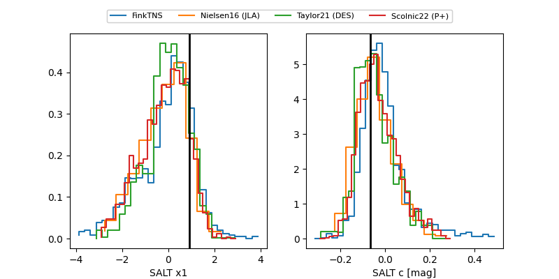

FINK: ZTF25aboswyt
Lasair: ZTF25aboswyt
ALeRCE: ZTF25aboswyt
ZTF25aboswyt (ztf,fink)
equatorial (ra, dec) = (139.1392,+39.17685)
galactic (l, b) = (183.4670,+44.13064)

last ztfr=18.40
14 ztfr detections